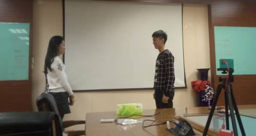
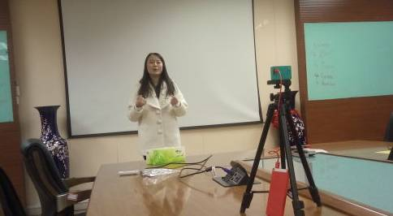
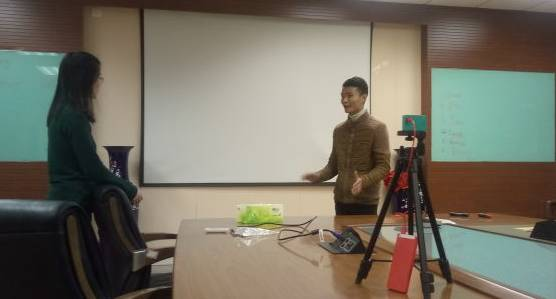
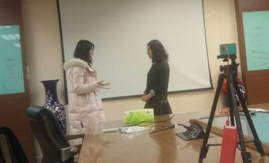

时间过得好快.....
不知不觉春节就把我们过了，然后新的一年开始了，该工作的工作了，该开学的开学了，上周五北航头马新学期第一次meeting正式举办，现场到底有哪些精彩的瞬间呢，让我们简单回顾下把~
换了新发型的主席Amy镇场！

As an old member of Beihang Toastmaster, Grace brought a very fluently and attentive speech. I think her nephew must be very cute, because her playing with her nephew has created so many unforgettable memories in the Spring festival for her. By the way, "It was so kind of her to repeat the question when i was missing at the stage even forgot to tell the audiences the details to the question, i was so grateful to her" said Flair who had just given his first show as a table topic master last week friady night.
Vigorous voice，fluent speech, Roc spread his magic power making us focus on his speech, During Spring Festival, He had a long distance travel marching to his hometown city from the capital, How can he make it? Do you believe it? Sounds incredible but it did happened, and i believed that those memorable experiences will light his new next years.
Do you know some things about John? What is his favorite food ? if you miss this meeting then you wouldn't know that John says his food flavor have been change a lot when he grow up. Anyway thanks to John's logical and gentle speech.
Fabulous oral english from Lyna's speech, in the speech, She shared her experiences when travelling around with us, talking with the people and the customs. all in all, there are always endless stories in her mind, which i think even can write a book.
coming from South Sudan and it happens to be him james to be chosen this question to talk about the hometown’s changes, He recalls 3 years ago the war on his hometown and he was so glad to see his hometown is recovering from the past. His speech has deeply impressed my mind, and lastly We all wish his hometown could keep peaceful and calm forever.

Very interesting a conversation from this 'CP'-Huan and Rocky , how embarrassed they are! If the two of you are having a blind data, what will your talk with each other? the salary, the past, or the future? During the conversation Huan said she didn't have a data with a man before, So, Rocky, how can you skip this valuable chance and let this beauty or lady go?

Thanks for the strong support from ZhongGuanCun Toastmaster Club, Undoubtedly, Lucy was so confident to stand on the stage and gave us a wonderful speech, but how could you reject our gastby's sincere devotion？

First time come to our club, Cathelina came up to the stage and had this funny dialogue with gastby, How to explain to your mom why you still don't have a girl friend yet? it isn't a difficult question for gastby, even he tried so many times just like he often said to his mom in reality but at that moment Catherine seems unpleasant with all those excuses, and that is what made this dialogue more funny and interesting.

Finally, We had this two-beauty group, Fiona and Crystal. Imagining the scene that a younger child is asking you as an elder lucky money, how will you react to her? Especially when the moment Crystal asking for lucky money , she was so cute! If i am the one, I will donate my wallet if she want.
In your life has anybody be your ferryman? Milton shared us with his stories with his those ferrymans. his grandfather, his teacher, his friends and so on. This is Milton's CC2 speech, and he brought us his touching personal experience and at the end of his speech he hopes that he could be someone else's ferryman, and i want relplied to you here that you definitely already are Mr Milton.

依然是挤满全场的大合照
Beihang toastmaster welcome everyone who loves comunication
through speaking English as well as chinese
if you wish your voice can be heard in public without fear
come to our stage and show yourself
meet you at every Friday night 7:30pm
position: please wait notification before each meeting.....
https://mp.weixin.qq.com/s/MeDdw4PbQIz6zwn-cQbvyg
本页为抢救式本地归档，图文已永久保存。